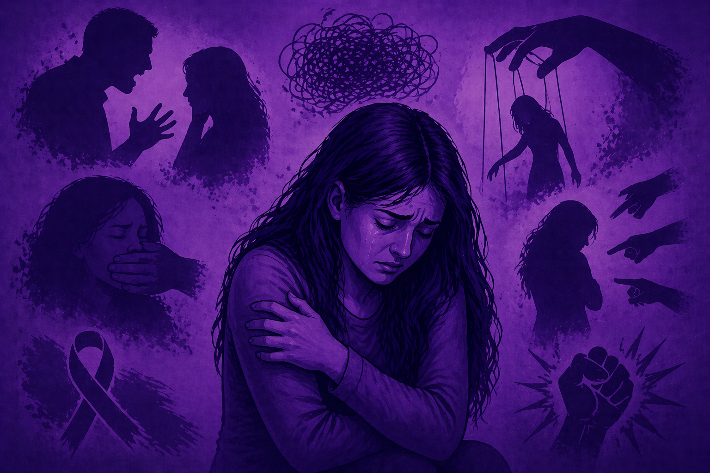
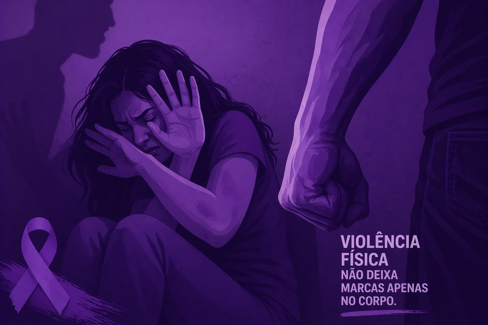
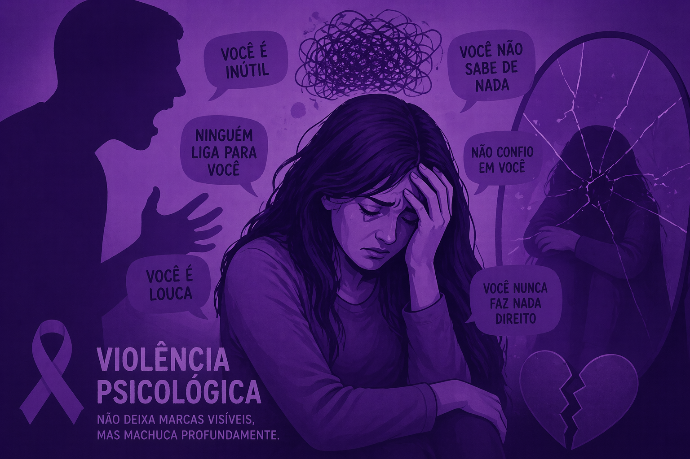
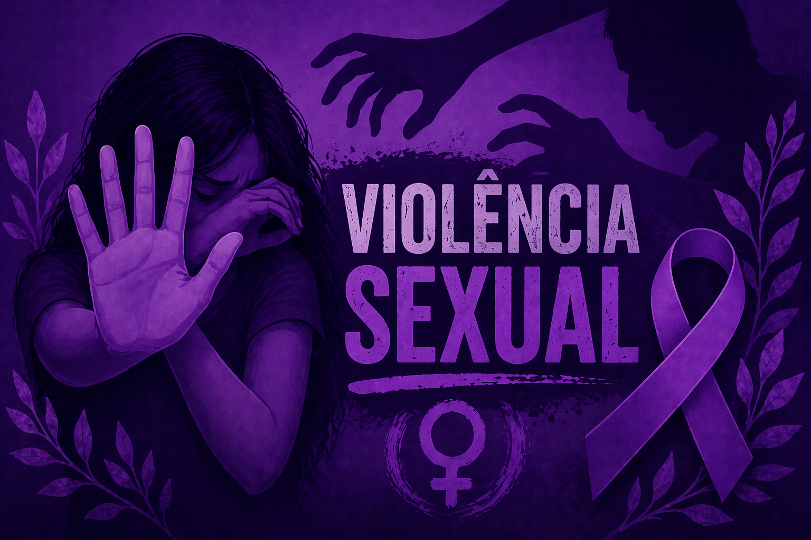
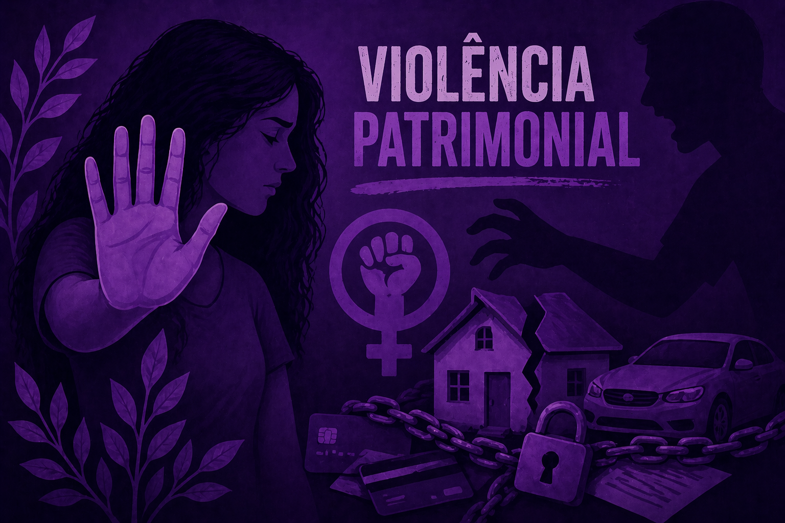
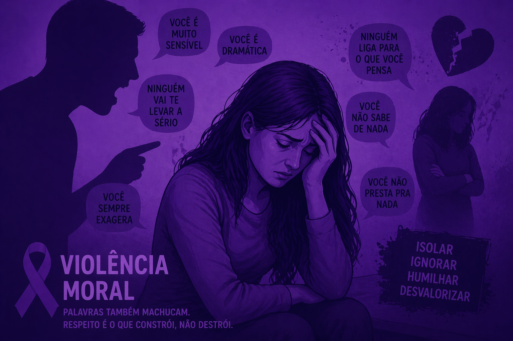

A violência contra a mulher é qualquer ação ou omissão baseada no gênero que cause morte, lesão ou sofrimento físico, sexual, psicológico, moral ou patrimonial, podendo ocorrer tanto em espaços públicos quanto privados.

Qualquer ação que machuca o corpo da vítima. Por exemplo: bater, dar socos ou tapas; empurrar e chutar; queimar ou usar objetos para ferir; estrangular ou tentar sufocar.

Quando o(a) agressor(a) afeta a mente da vítima, causando medo, humilhação ou controle. Por exemplo: insultar e humilhar constantemente; fazer ameaças; controlar com quem a pessoa fala ou sai; diminuir a autoestima da vítima, manipular ou fazer chantagem emocional.

Quando a vítima é obrigada ou pressionada a participar de atos sexuais sem consentimento. Por exemplo: forçar relação sexual; brigar práticas que a pessoa não quer; impedir o uso de métodos contraceptivos; forçar gravidez ou aborto.

Quando alguém controla, destrói ou tira os bens da vítima. Por exemplo: quebrar objetos pessoais; tomar dinheiro; controlar o salário; destruir documentos ou impedir acesso a eles, gerando dependência financeira.

Está relacionada a ofensas que atacam a honra ou reputação. Por exemplo: fazer acusações falsas; espalhar boatos ou mentiras; insultar ou difamar publicamente, afetando a dignidade da vítima.

• 88% das mulheres já sofreram violência psicológica, e a maioria dos casos ocorre na presença de crianças.
• Denúncias ao 180 subiram 33% em 2025, refletindo um aumento na percepção e denúncia de violência.
• Em 2025, quase 630 mil medidas protetivas foram concedidas, mais do que o dobro do registrado cinco anos antes.
• Em janeiro de 2026, o Judiciário brasileiro registrou 947 novos casos de feminicídio.
• Em 2025, o 180 completou 20 anos de funcionamento.
A Lei Maria da Penha (Lei n.º 11.340/2006) representa o principal símbolo de proteção dos direitos das mulheres no Brasil, foi estabelecida para combater diversas formas de violência contra a mulher, incluindo as mencionadas anteriormente. Essa lei é essencial, pois proporciona às mulheres os recursos necessários para combater a violência, reforçando que elas não estão sozinhas nessa batalha. Ao assegurar proteção e justiça, a lei contribui para a transformação de nossa realidade, formando uma sociedade mais segura e humana para todos. Com o apoio da lei, promovemos a independência feminina iniciativa diariamente em direção a um futuro com mais respeito e dignidade para todas.
O silêncio nutre a violência, porém a sua voz traz à tona a liberdade. Você não está sozinha, e a lei está a seu favor!
Ligue 180 ou procure apoio
📍 Av. Dr. Antônio Carlos Salles Júnior, 310 - Jardim Proença I, Campinas - SP
180 – Central de Atendimento à Mulher Atendimento gratuito e sigiloso, 24 horas por dia.
190 – Polícia Militar
Em casos de emergência imediata.
Delegacia da Mulher
Atendimento presencial para registro de ocorrência.
Telefone: (19) 3242-5003
• Procure um CRAS ou CREAS da sua cidade
• Converse com pessoas de confiança
• Denuncie anonimamente pelo 180
Se você estiver passando por uma situação de violência ou souber de alguém que esteja, procure ajuda. Você não está sozinha.